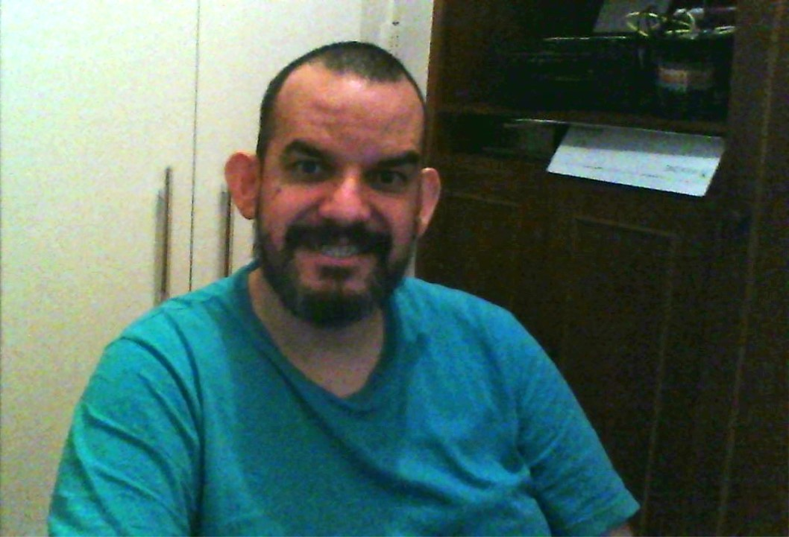
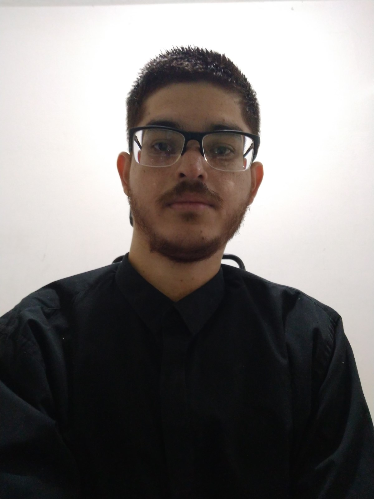

Quem somos
-

Herick Portugal Bomtorin
Herick Portugal Bomtorin é Deficiente Auditivo Bilateral profunda desde nascença, formado de tecnólogo em Análise e Desenvolvimento de Sistemas em 2013, último trabalho dele na empresa chamada LINX Sistemas e Consultoria atuando como Suporte de TEF de Conectividade. Interessou de tecnologia quando tinha 15 anos de idade e até hoje obteve vários cursos em especificação de tecnologia em qualquer área.
-
 Bruno da Silva Santos
Bruno da Silva Santos, Deficiente físico(Cadeirante), 29 anos. Estudei por 2 anos contabilidade e me formei em Tecnologia em Análise e Desenvolvimento de Sistemas em 2019. Fiz estágio em 2018/2019 na IBM em Suporte Mainframe e atualmente trabalho na NETSHOES na área de atendimento via chat/e-mail. Sempre gostei de tecnologia e quero voltar pra minha área de formação, desenvolver SKILS com treinamento e na prática pra ganhar conhecimento na área e me consolidar como desenvolvedor
-

 Allan Andrews Nunes de Pontes
Allan Andrews Nunes de Pontes
Allan Andrews Nunes de Pontes, sou Deficiente visual desde nascença. Durante alguns Anos cursei tecnólogo em Eletrômecanica e Serviços indústrias. Meu Último trabalho foi auxiliar em Manutenção industrial na empresa Gerdau Aços longos. Percebi que outras áreas me interessavam mais, e foi aí que conheci A área de tecnologia, onde hoje estou muito encantado e apreendendo muito nesse novo Mundo.
-
 Nome participante
Nome participante
Sobre você ---descrição
-
Nome participante
Sobre você ---descrição